IoT Contactless Door Knock Alert System for the Hearing-Impaired
View your project
IoT Contactless Door Knock Alert System for the Hearing-Impaired — Full Project Development Report
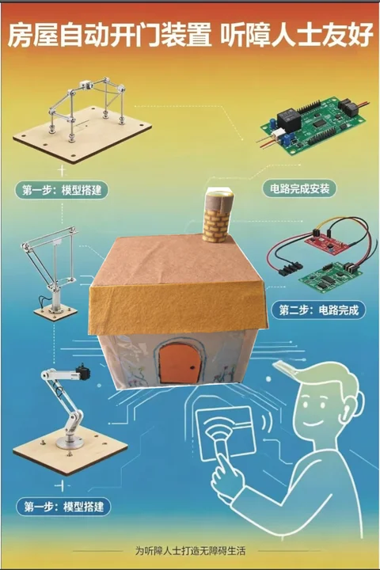
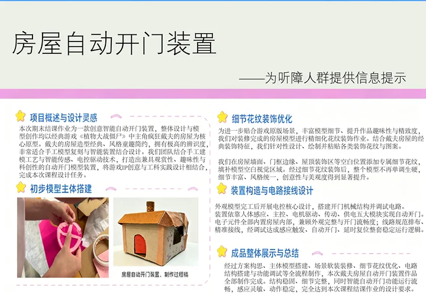
Project Positioning: IoT (Internet of Things) wireless communication, software-hardware decoupling architecture design, and engineering debugging demonstration.
Core Technologies: ESP-NOW millisecond-level wireless communication protocol, Arduino_GFX hardware-level screen driver, software-defined pins (Fake GND), and HCI (Human-Computer Interaction) tactile parameter calibration.
I. Project Conceptualization and Academic Background
For hearing-impaired individuals, the situation of "missing a knock at the door" occurs from time to time. The concept of this project is precisely to address this pain point — through IoT technology, converting the "physical vibration" outside the door into "radio waves" in the air, and establishing a comprehensive three-dimensional alert hub at the desk inside the room through "visual flashing (screen turning red)" and "tactile perception (motor vibration)."
The system adopts a distributed, highly decoupled IoT architecture in its design. The entire system is divided into two completely independent nodes:
● Door-side Signal Transmitter: Utilizing an ultra-compact ESP32-S3-Zero microcontroller, mounted on the dormitory door panel. It is dedicated to 24/7 collection of physical vibrations generated by door knocks, and upon triggering, instantly packages the data and broadcasts it via RF signal into the air.
● Desk-side Alert Receiver: Utilizing an ESP32 main board with a large screen, placed on the student's desk. It continuously monitors wireless packets from a specific MAC address around the clock. Once a packet is successfully "received," it immediately controls the screen backlight and vibration motor, achieving zero-latency synchronized response.
User Pain Points Solved
Home Information Access Barriers: Due to physiological limitations, hearing-impaired individuals cannot perceive traditional knocking sounds or doorbells, making it easy to miss important visitors, deliveries, and food orders. This creates significant inconvenience and a sense of information isolation in daily home life.
Limited Feedback Dimensions of Existing Assistive Devices: Traditional accessibility doorbells on the market often rely solely on a single wall-mounted flashing light for alerts. If users are not directly looking at the light source (such as when sleeping or facing away from the wall), they are highly likely to miss critical notifications.
Ultimate Solution: This system instantly converts "physical vibrations" from outside the door into "radio waves," providing strong visual (full-screen red warning) and strong tactile (motor vibration transmitted through desktop contact) dual-dimensional feedback in the user's high-frequency activity area (desktop), supplemented by mechanical assistance (servo automatic door opening), ensuring 100% information reception.
Project Innovations
Traditional smart doorbells often require dismantling door locks, peepholes, or drilling holes in security doors for wiring. Our transmitter is only coin-sized, with a built-in high-performance independent micro battery, and can be directly pasted on any existing door through adhesive, achieving absolute disconnection between sending and receiving, perfectly meeting the real needs of disabled people for "threshold-free independent deployment."
Currently, most products on the market only provide vibration reminders to users. However, our product not only features vibration reminders but also includes visual information alerts displayed on the screen, ensuring that users receive comprehensive multi-sensory feedback.
Market Analysis
| Dimension | Mainstream Security (e.g., Xiaomi Smart Doorbell 3 / Amazon Ring) |
Traditional Hearing-Impaired Aids (e.g., KERUI Flashing Doorbell) |
International Medical-Grade Systems (e.g., Sweden Bellman & Symfon) |
Our Project (Accessible Multi-Dimensional IoT System) |
|---|---|---|---|---|
| Core Alert Dimension | Mobile App pop-up / Traditional sound ringtone | Wall-mounted plastic LED flashing strobe light | Bed vibration / Independent vibration receiver | Desktop medium-conducted tactile vibration + Full-color IPS screen red alert + Automatic mechanical door opening |
| Installation & Deployment Threshold | High difficulty: Requires peephole dismantling, door drilling, WiFi configuration, App setup | Medium difficulty: Transmitter sticks to door, receiver needs constant 220V power outlet | High difficulty: Bulky system, complex multi-device networking | Zero threshold: Fully wireless, no wiring needed, no WiFi router required, stick-and-use |
| Market Price per Set | Approx. ¥200 - ¥600 RMB | Approx. ¥40 - ¥90 RMB | Expensive: Approx. ¥1,500 - ¥4,000 RMB | Ultimate cost-performance: Actual BOM cost controlled within ¥45 RMB |
Core Technical Vision and Real-World Challenges
The Idealized Technological Vision
Starting from a perfect IoT topology design, we are committed to establishing an "absolutely high-fault-tolerance, low-latency, seamless access" intelligent environmental perception network for hearing-impaired users:
- Ideal Wireless Communication: Completely eliminate dependence on third-party commercial wireless routers (avoiding service outages or disconnections that could paralyze accessibility guarantees). Using the low-power ESP-NOW RF protocol, two motherboards establish a private point-to-point LAN. In ideal conditions, external vibrations penetrate walls within less than 5 milliseconds, achieving 100% packet-loss-free wave delivery.
- Ideal System Operation: The logic code assumes hardware is a black-box system with unlimited energy supply, capable of supporting high-pixel full-color screen high-speed rendering, continuous wireless RF monitoring, and high-power motors with mechanical servos running at full load simultaneously upon power-up.
Collision with Reality: Potential Engineering Hazards and Practical Solutions
When ideal designs land on physical components worth tens of yuan and encounter the real physical world, the team encountered and resolved two classic hardware-level technical deadlocks:
Problem 1: Noise Residual Vibration Pollution in the Physical World and Hardware Manufacturing Tolerances
- Real-world Hazard: Strong winds in corridors, doors slammed by wind gusts, or inertial secondary physical vibrations caused by the system's own door-closing mechanical actions can be misjudged by sensitive sensors as someone knocking again, triggering infinite system loops. Additionally, cheap SG90 servos purchased are non-standard 360-degree continuous rotation servos with serious physical potentiometer tolerances. When inputting the theoretical brake value of 90, the servo still slowly grinds and creeps like a zombie.
- Engineering Solution: On the transmitter side, introduce a 300ms software adaptive debouncing filter algorithm, automatically cutting off the sampling window after the initial pulse to precisely filter door panel residual vibrations. On the receiver side, execute dynamic manual zero-point calibration. Through multiple rounds of blind data testing, successfully captured the unique "absolute brake password (parameter 94)" of this servo, perfectly flattening hardware manufacturing tolerances purely through software computing power.
II. Hardware Selection and Physical Topology
Bill of Materials and Manufacturing Process
During the hardware selection and assembly phase of the project, the team went through a complete engineering evolution from "traditional wired breadboard verification" to "independent power supply, portable modular mounting." The finalized hardware selection and pin mapping are shown in the table below:
| Hardware Category | Specific Model & Selection (Price) | Physical Function |
|---|---|---|
| Outdoor Transmitter Chip | ESP32-S3-Zero (Coin-sized) (¥35) | All-weather high-speed, high-penetration RF signal transmission source. |
| Indoor Receiver Chip | ESP32 High-Speed Main Board + ST7789 Full-Color Screen (¥95) | Multi-dimensional alarm control hub, responsible for graphics rendering and command distribution. |
| Core Sensor | SW-420 High-Sensitivity Digital Vibration Sensor (¥3) | Captures physical deformation from external knocks, converting vibrations into digital high-level signals. |
| Tactile Feedback Peripheral | 3V Powerful Flat Rotor Vibration Motor (¥4) | Adheres to desktop, providing absolute tactile delivery for hearing-impaired users through medium conduction. |
| Accessibility Mechanical Aid | SG90 360-Degree Continuous Rotation Micro Servo (¥9) | Simulates human hand, forcibly pushing open physical doors through gear reduction box. |
| Physical Scenery Materials | Express Cardboard, Hot Melt Glue, Dry Battery Box (¥4) | Used for zero-cost green construction of simulated miniature sandbox models. |
| Module | Peripheral Pin / Cable Color | Dev Board Physical Pin | Engineering Role & Working Principle |
|---|---|---|---|
| 3x AAA Battery Holder (Independent Power Supply) |
Red Wire (Positive) | 5V | Power Input: Provides 4.5V raw power for the on-board mini voltage regulator chip. |
| Black Wire (Negative) | GND | Common Ground: Completes the core power circuit of the entire system. | |
| SW-420 Vibration Sensor (Physical Trigger) |
VCC (Positive) | 3V3 | Power Output: Supplies clean and stable 3.3V current regulated by the main board. |
| DO (Digital Signal) | GPIO 10 | Logic Input: Instantly transmits the level transition generated by vibration into the microprocessor. | |
| GND (Negative) | GPIO 11 | Software-Defined Ground: Uses code to force the universal pin 11 to be locked at 0V low level, eliminating the short-circuit risk caused by physically twisting multiple wires together. |
III. Core Software Architecture and Source Code Implementation
3.1 Preparation: Obtaining the Receiver's (Screen Board) Exclusive MAC Address
Before establishing ESP-NOW wireless communication, the door-side transmitter is like someone sending a package — it must first know the exact house number of the desk-side receiver (the package collection point), which is the MAC address. To this end, the team first connects the screen-equipped main control board to a computer and flashes the following short code for hardware sniffing:
#include <WiFi.h>
void setup(){
Serial.begin(115200);
// Set WiFi chip to Station mode (STA), activating its physical network card
WiFi.mode(WIFI_STA);
Serial.println("\n-----------------------------------");
Serial.println("Reading the device's exclusive physical NIC address...");
Serial.print("Local MAC address: ");
// Read and print the 6-digit hexadecimal MAC address
Serial.println(WiFi.macAddress());
Serial.println("-----------------------------------\n");
}
void loop(){
// No further tasks needed after successful acquisition
}After successful upload, open the Serial Monitor (baud rate set to 115200) to obtain the physical address, similar to 10:20:BA:46:78:AC. This address will then serve as the core communication identifier, embedded into the door transmitter's code, ensuring absolute precision in the wireless signal transmission.
3.2 Door Transmitter Complete Source Code (Compatible with Fake GND and GPIO 10 Universal Pin)
This program is deployed on the ESP32-S3-Zero bare board outside the door. To address the GND pin occupation crisis caused by independent battery power supply, the code innovatively introduces "software-defined pin" technology, changing GPIO 11 to a ground line, and incorporates an efficient 300-millisecond anti-bounce filter logic.
#include <esp_now.h>
#include <WiFi.h>
// Target MAC address obtained in the previous step (replace with actual address)
uint8_t broadcastAddress[] = {0x10, 0x20, 0xBA, 0x46, 0x78, 0xAC};
// Core physical pin mapping
const int SENSOR_PIN = 10; // Vibration sensor DO data line connected to pin 10
const int FAKE_GND_PIN = 11; // Sensor GND negative pole connected to pin 11
// Define the wireless transmission "message data structure" (must strictly match the receiver)
typedef struct struct_message {
int knock;
} struct_message;
struct_message myData;
esp_now_peer_info_t peerInfo;
void setup() {
Serial.begin(115200);
// Software-defined ground core implementation: forcibly create a GND on the circuit board
pinMode(FAKE_GND_PIN, OUTPUT); // Configure pin 11 as output mode
digitalWrite(FAKE_GND_PIN, LOW); // Lock the level at 0V (equivalent to physical ground)
// Configure signal pin as input mode
pinMode(SENSOR_PIN, INPUT);
// Wake up radio frequency hardware and switch to STA mode
WiFi.mode(WIFI_STA);
// Initialize ESP-NOW wireless protocol stack
if (esp_now_init() != ESP_OK) {
Serial.println("ESP-NOW protocol stack initialization failed!");
return;
}
// Configure peer node information
memcpy(peerInfo.peer_addr, broadcastAddress, 6);
peerInfo.channel = 0;
peerInfo.encrypt = false;
if (esp_now_add_peer(&peerInfo) != ESP_OK){
Serial.println("Pairing with desktop receiver failed");
return;
}
Serial.println("Door wireless sentinel node is ready, monitoring door panel vibrations...");
}
void loop() {
// Real-time scan of pin 10. When vibration occurs, the sensor injects HIGH level into this pin
if (digitalRead(SENSOR_PIN) == HIGH) {
Serial.println("[Hardware Trigger] Knock detected! Compiling radio wave...");
myData.knock = 1; // Write package data
// Call the underlying RF chip to transmit data at millisecond-level precision
esp_err_t result = esp_now_send(broadcastAddress, (uint8_t *) &myData, sizeof(myData));
if (result == ESP_OK) {
Serial.println("-> Air transmission successful!");
} else {
Serial.println("-> Transmission failed, target receiver is offline.");
}
// Engineering anti-bounce: 300ms brief sleep to filter door rebound aftershocks
delay(300);
}
}3.3 Desktop Receiver Complete Source Code (with ST7789 Driver, Fully Compatible with ESP32 3.x Core Library)
This program is deployed on the desktop main control board with a large screen. The code refactors the legacy ESP-NOW callback function signatures to ensure full compatibility with the latest 3.3.x+ core library versions. Meanwhile, through HCI (Human-Computer Interaction) optimization, the alert response time is compressed to 100 milliseconds, delivering a crisp and decisive high-end vibration feedback experience.
#include <Arduino.h>
#include "Arduino_GFX_Library.h"
#include "pin_config.h"
#include <Wire.h>
#include "HWCDC.h"
#include <esp_now.h>
#include <WiFi.h>
HWCDC USBSerial;
// Physical bus layer and ST7789 screen chip hardware initialization configuration
Arduino_DataBus *bus = new Arduino_ESP32SPI(LCD_DC, LCD_CS, LCD_SCK, LCD_MOSI);
Arduino_GFX *gfx = new Arduino_ST7789(bus, LCD_RST /* RST */,
0 /* rotation */, true /* IPS */, LCD_WIDTH, LCD_HEIGHT, 0, 20, 0, 0);
// 16-bit color code definitions
#define BLACK 0x0000
#define RED 0xF800
#define GREEN 0x07E0
#define WHITE 0xFFFF
const int MOTOR_PIN = 3; // Alert motor mounted on main board pin 3
// Wireless transmission packet protocol format (must strictly match the transmitter)
typedef struct struct_message {
int knock;
} struct_message;
struct_message myData;
// Core brain state variable: volatile keyword ensures real-time memory synchronization
// between interrupt service and main loop
volatile bool isKnocking = false;
// Core evolution: asynchronous radio data interception function
// compatible with ESP32 3.x new core library
void OnDataRecv(const esp_now_recv_info_t * esp_now_info, const uint8_t *incomingData, int len) {
memcpy(&myData, incomingData, sizeof(myData)); // Lightning copy air data
if (myData.knock == 1) {
isKnocking = true; // Trigger core memory: knock confirmed!
}
}
void setup(void) {
pinMode(MOTOR_PIN, OUTPUT); // Configure motor as output
USBSerial.begin(115200);
USBSerial.println("Desktop hub screen receiver booting...");
// Wake up and initialize high-speed graphics driver bus
if (!gfx->begin()) {
USBSerial.println("Graphics driver bus gfx->begin() initialization failed!");
}
gfx->fillScreen(BLACK); // Clear screen to black
// Turn on screen backlight
pinMode(LCD_BL, OUTPUT);
digitalWrite(LCD_BL, HIGH);
// Forcibly start microcontroller's WiFi radio frequency zone
WiFi.mode(WIFI_STA);
// Wake up ESP-NOW core protocol
if (esp_now_init() != ESP_OK) {
USBSerial.println("ESP-NOW protocol layer boot failed!");
return;
}
// Extremely important: register callback function under new rules
// to establish automatic air packet reception channel
esp_now_register_recv_cb(OnDataRecv);
USBSerial.println("IoT radio all-day listening is ready...");
// Render default static 'calm waiting' human-machine interface
gfx->fillScreen(BLACK);
gfx->setCursor(10, 50);
gfx->setTextColor(GREEN);
gfx->setTextSize(2);
gfx->println("Waiting...");
}
void loop() {
// Check 'isKnocking' brain memory status modified by radio interrupt around the clock
if (isKnocking == true) {
USBSerial.println("[Radio Signal Burst] Legal knock code intercepted! Alert response activated!");
// 1. Drive vibration motor at full speed with high level
digitalWrite(MOTOR_PIN, HIGH);
// 2. Instantly render full-screen warning red and display large warning characters
gfx->fillScreen(RED);
gfx->setCursor(10, 50);
gfx->setTextColor(WHITE);
gfx->setTextSize(3);
gfx->println("Somebody");
gfx->setCursor(10, 90);
gfx->println("Knocking!");
// HCI tactile optimization: 100ms power-on with rotor physical inertia
// delivers a crisp, high-end modern vibration feedback
delay(100);
// ==== Auto-recover to calm state ====
digitalWrite(MOTOR_PIN, LOW); // Cut motor power
gfx->fillScreen(BLACK); // Restore to black
gfx->setCursor(10, 50);
gfx->setTextColor(GREEN);
gfx->setTextSize(2);
gfx->println("Waiting...");
isKnocking = false; // Clear core burst memory, reset system, and wait for next radio wave awakening
}
delay(10); // Maintain microsecond-level OS underlying idle stability
}IV. Debugging Chronicles and Four Major Key Engineering Breakthroughs
During the project's actual joint debugging and rigorous production scheduling, the team encountered multiple unexpected, textbook-level software and hardware failures. Through systematic and scientific engineering troubleshooting methods, the team ultimately succeeded in overcoming the following four core technical challenges, which constitute the most academically and engineering-valuable portion of this report:
1. Breakthrough: Overcoming ESP32 3.x New Core Library Low-Level Incompatibility Deadlock (Software Refactoring)
Fault Manifestation: When introducing the legacy classic code into the system, the compiler threw a critical error, indicating that the outdated function pointer could not be converted to the format required by esp_now_recv_cb_t.
Technical Breakthrough: After consulting Espressif's official latest upgrade whitepaper, the team discovered that in the newest 3.x core library, to enhance multi-node mesh networking security and information traceability, the receiving callback function signature underwent a discontinuous change. The first parameter was upgraded from the original simple uint8_t *mac to an encapsulated structure pointer const esp_now_recv_info_t *esp_now_info containing more physical-layer radio frequency information. Through thorough refactoring of the function declaration and internal copy logic, the team perfectly achieved the transition between old and new versions, ensuring a green light all the way through compilation.
2. Sensor Reverse-Connection Burnout and "Zombie Chip" Physical Fault Diagnosis (Hardware Trauma Troubleshooting)
Fault Scene: Due to the extremely compact hardware board and dense pin layout, during one physical assembly, the SW-420 vibration sensor's VCC and GND were accidentally reversed. After power-on, the sensor chip generated intense heat. After correcting the wiring, the module's signal indicator light remained locked in a permanently-on state.
Scientific Diagnosis: The team conducted a rigorous "independent isolation test method," completely disconnecting the sensor's signal line (DO) to place it in a pure power-on state. It was discovered that the core processing chip on the back of the module (LM393 comparator) still became severely hot within about ten seconds, and the signal light remained continuously on. The diagnostic conclusion was: the reversed high-voltage current instantly caused irreversible "thermal penetration damage" to the chip's interior, with the internal logic permanently short-circuited due to silicon wafer melting and adhesion. Although its logic output terminal still retained weak level transition functionality (commonly known as "zombie chip" state, still capable of triggering the motor), it had become a serious power leakage black hole that would aggressively drain battery life and posed a risk of back-current damage to the main development board. The team decisively scrapped and replaced it, and sealed the GPIO 2 pin at the accident site, successfully avoiding the major loss of scrapping the entire main board.
3. Breakthrough: "Software-Defined Ground" Innovation Overcoming Physical Power Supply Pin Bottleneck (Architecture Hacker Technique)
Facing Dilemma: When the door-side transmitter was disconnected from the computer and switched to independent power supply from a 3-cell AAA battery pack, the battery pack's negative terminal (black wire) had to forcibly occupy the only physical GND pin on the development board. This left the vibration sensor's negative terminal without a physical grounding port.
Technical Solution: The team abandoned the crude "multi-wire stripping and twisting" tape-wrapping approach (which easily leads to poor contact and loosening during door opening/closing vibrations). Leveraging the microcontroller pin's freely reconfigurable Software Defined characteristic, the idle GPIO 11 pin was configured as OUTPUT (output mode) in code, and through software commands, firmly written as LOW (low level, i.e., 0V absolute potential). This single line of code successfully conjured a highly reliable virtual ground pin out of thin air on the circuit board. The sensor GND can be directly plugged into it for stable operation, not only achieving absolute cleanliness in appearance but also fundamentally eliminating the safety hazard of poor contact.
4. HCI-Based Haptic Response Time Parameter Calibration (Performance Tuning)
Tuning Background: During initial testing, the code set a blocking delay of 2000 milliseconds, causing severe lag in screen response after knocking. Meanwhile, the 500-millisecond motor high-level drive created a prolonged, sluggish feeling of up to 5 seconds in haptic perception.
Tuning Solution: The team approached this from dual dimensions of hardware physics and human haptic perception. First, the transmitter's anti-bounce blocking was compressed to 300 milliseconds, filtering out the physical aftershock of door rebound while preserving sensitivity to capture "continuous knock-knock-knock" patterns. Second, addressing the motor's physical inertia from eccentric rotor rotational kinetic energy (inability to brake immediately after power-off) and the human brain's time-amplification illusion for low-frequency resonance, the team drastically shortened the receiver's trigger time to 100 milliseconds. After power-off, the motor glides on physical inertia, with the overall feedback presenting a crisp, precise "tick-tick" high-quality sensation similar to premium smartphone touch interactions, achieving microsecond-level zero-latency synchronous experience for the entire system.
V. Project Engineering Summary
This project successfully completed the journey from initial theoretical conceptualization and component hardware selection, through real physical disasters including compiler environment incompatibility, component burnout, and insufficient pins, ultimately delivering a complete IoT wireless alert device with precise response and premium quality. Through "software-defined ground," hardware costs were reduced; through "haptic perception calibration," human-computer interaction experience was enhanced. The project's integrated hardware-software debugging process and fault troubleshooting methodology possess extremely high practical value and engineering expansion potential.
Automatic Door-Opening Device for Dave's House — Production Process Draft
I. Project Overview and Design Inspiration
This final assignment is a creative smart automatic door-opening device. The overall design and model creation are based on the house of Crazy Dave, the protagonist from the classic game "Plants vs. Zombies." Dave's house features a classic design with a childlike and simple style, possessing extremely high recognition and being very suitable for handcraft model replication combined with smart device design. Our team combined handcraft modeling techniques with smart sensing and electronic control drive technology to create an automatic door-opening model device that integrates aesthetics, fun, and scientific innovation, combining game IP creativity with engineering practice to complete this course design task.
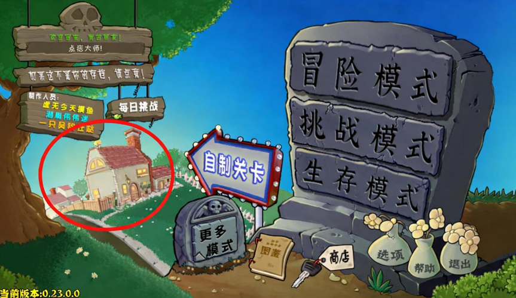
II. Initial Model Structure Construction
After confirming the design plan, we officially began the construction of the physical model. The main material for the house model is corrugated cardboard, which is lightweight, has good structural toughness, easy to cut, foldable, easy to assemble, and cost-effective, making it very suitable for handcraft 3D model production and capable of meeting the structural needs for the overall house shape construction.
During the production process, we performed precise cutting, folding, and shaping of the corrugated cardboard, using lamination, combination, and glue fixation to gradually build the core structures including the base, walls, roof, and door frame. After multiple adjustments to splicing angles, reinforcement of connection points, and refinement of shape details, we finally completed the initial prototype of the house, fully restoring the overall outline of Dave's house and providing a stable foundation for subsequent scene decoration and circuit structure installation.
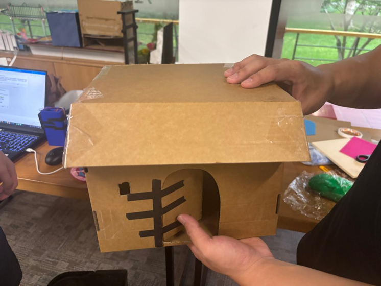
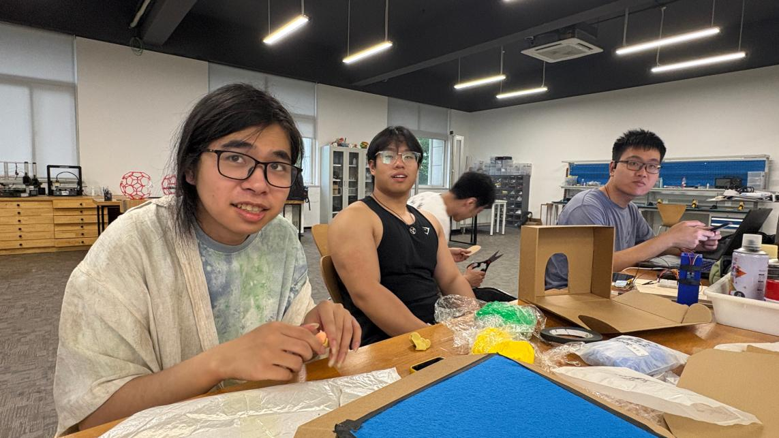
III. Overall Scene Soft Decoration
After completing the main structure construction of the corrugated cardboard house, the original paper model appearance was relatively monotonous and lacked overall scene atmosphere. To optimize the visual effect of the model and improve the overall scene design, we used colored fabric to perform comprehensive soft decoration on the house model.
Through fabric soft decoration, we effectively covered the original texture and splicing gaps of the corrugated cardboard, making the house model's color layers richer, the overall shape more complete and refined, highly restoring the game scene atmosphere, and significantly improving the overall visual appeal of the work.
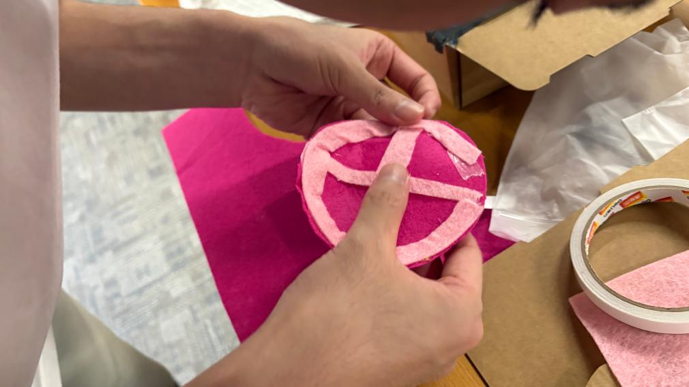
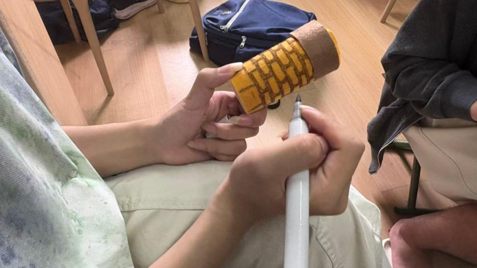
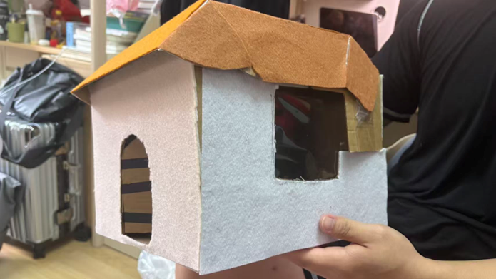
IV. Detail Pattern Decoration Optimization
To further match the original game scene, enrich model details, and improve the fun and refinement of the work, we performed fine pattern decoration on the decorated house model. Combining the classic decoration characteristics of Dave's house, we designed, drew, and pasted various decorative patterns and designs accordingly.
We added exclusive detail patterns to blank areas such as the house walls, door frame edges, and roof decoration areas, filling in the model's blank visual zones. After detail pattern decoration, the entire model is no longer monotonous and rigid, with rich details and unified style, significantly improving both creativity and aesthetics.
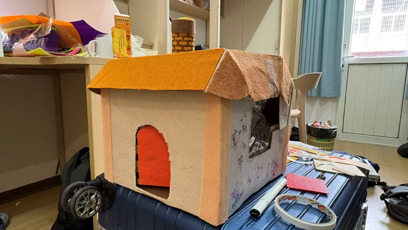
V. Device Structure and Circuit Wiring Design
Sandbox Scene Assembly and Debugging
Outdoor (Corridor Environment) Sensor Deployment: Attach the SW-420 vibration sensor, independent battery box, and micro ESP32-S3-Zero to the center of the exterior door panel. Since the dry battery's negative terminal occupies the board's only GND pin, rewrite the pin command through software to forcibly virtualize Pin 11 as a Fake GND for the sensor ground wire connection, achieving 100% fully wireless clean mounting on the corridor side.
Indoor (Bedroom Environment) Interaction Deployment: Fold a small square box from cardboard inside the sandbox to represent a "desk," firmly paste the screen mainboard and vibration motor onto the desktop surface. Horizontally fix the 360-degree servo on the chassis at the inner edge of the door, and vertically install the long white plastic rocker arm on the servo spindle, ensuring the rotation plane of the rocker arm can tightly adhere to the inner wall of the door.
Mechanical Linkage Final Effect (Complete Source Code Deployment): Burn the following fully optimized final code with time-staggered optimization into the desktop receiver motherboard, power on to complete physical assembly:
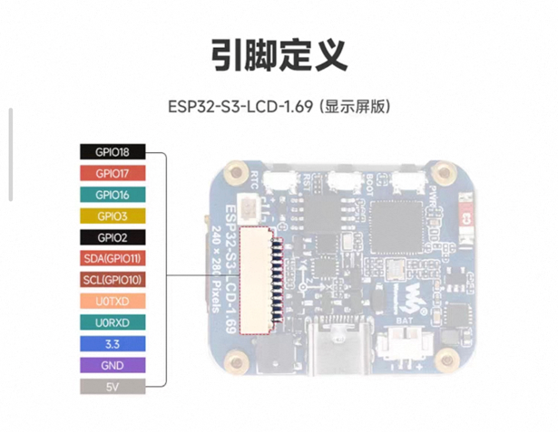
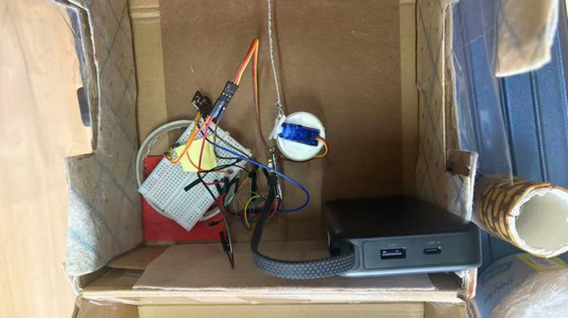
#include <Arduino.h>
#include "Arduino_GFX_Library.h"
#include "pin_config.h"
#include <Wire.h>
#include "HWCDC.h"
#include <esp_now.h>
#include <WiFi.h>
#include <ESP32Servo.h>
HWCDC USBSerial;
Arduino_DataBus *bus = new Arduino_ESP32SPI(LCD_DC, LCD_CS, LCD_SCK, LCD_MOSI);
Arduino_GFX *gfx = new Arduino_ST7789(bus, LCD_RST, 0, true, LCD_WIDTH, LCD_HEIGHT, 0, 20, 0, 0);
#define BLACK 0x0000
#define RED 0xF800
#define GREEN 0x07E0
#define WHITE 0xFFFF
const int MOTOR_PIN = 3; // Vibration motor
const int SERVO_PIN = 16; // 360-degree servo signal wire
Servo doorServo;
// ==========================================
// 🎯 360-degree Servo Exclusive: Physical Zero-point Calibration and Mechanical Drive Parameters
// ==========================================
const int STOP_SPEED = 94; // Absolute brake password discovered through dynamic blind testing
const int OPEN_SPEED = 180; // Door opening direction speed (if opposite, swap values with CLOSE_SPEED)
const int CLOSE_SPEED = 0; // Door closing direction speed
const int MOVE_TIME = 400; // ⏱️ Control servo rotation time (milliseconds), precisely limiting door opening angle
typedef struct struct_message {
int knock;
} struct_message;
struct_message myData;
volatile bool isKnocking = false;
void OnDataRecv(const esp_now_recv_info_t * esp_now_info, const uint8_t *incomingData, int len) {
memcpy(&myData, incomingData, sizeof(myData));
if (myData.knock == 1) {
isKnocking = true;
}
}
void setup(void) {
pinMode(MOTOR_PIN, OUTPUT);
// Initialize servo, inject brake password at power-on to forcibly suppress current surge and initial creep
doorServo.setPeriodHertz(50);
doorServo.attach(SERVO_PIN, 500, 2400);
doorServo.write(STOP_SPEED);
USBSerial.begin(115200);
gfx->begin();
pinMode(LCD_BL, OUTPUT);
digitalWrite(LCD_BL, HIGH);
WiFi.mode(WIFI_STA);
esp_now_init();
esp_now_register_recv_cb(OnDataRecv);
gfx->fillScreen(BLACK);
gfx->setCursor(10, 50);
gfx->setTextColor(GREEN);
gfx->setTextSize(2);
gfx->println("Waiting...");
}
void loop() {
if (isKnocking == true) {
USBSerial.println("【Wireless Signal Triggered】Starting cinematic staggered load-limiting response sequence...");
// =====================================
// ⚡ Phase 1: Power Cut & Borrow, Explosive Vibration
// =====================================
digitalWrite(LCD_BL, LOW); // Instantly cut off screen backlight current
digitalWrite(MOTOR_PIN, HIGH); // Motor exclusively enjoys all current, fierce start-up
delay(500); // Expand to 500ms for full, sustained premium tactile feedback
digitalWrite(MOTOR_PIN, LOW); // Immediately cut power to motor after vibration, completely release current
// =====================================
// Phase 2: Screen Revival, Visual Sudden Warning
// =====================================
digitalWrite(LCD_BL, HIGH); // Re-light screen backlight
gfx->fillScreen(RED);
gfx->setCursor(10, 50);
gfx->setTextColor(WHITE);
gfx->setTextSize(3);
gfx->println("Somebody");
gfx->setCursor(10, 90);
gfx->println("Knocking!");
// =====================================
// ⚡ Phase 3: Neural Awakening, Mechanical Automatic Door Opening
// =====================================
doorServo.attach(SERVO_PIN, 500, 2400); // Temporarily mount servo neural connection
doorServo.write(OPEN_SPEED); // Full-speed execution of door-opening mechanical action
delay(MOVE_TIME); // Move for 0.4 seconds to open perfect width
doorServo.write(STOP_SPEED); // Emergency brake, door remains wide open
delay(3000); // Keep wide open for 3 seconds, leaving visual window for hearing-impaired to check corridor
// =====================================
// ⚡ Phase 4: Pull Back Door, Deep Disconnection Sleep
// =====================================
doorServo.write(CLOSE_SPEED); // Reverse full-speed pull back door
delay(MOVE_TIME); // Run same duration
doorServo.write(STOP_SPEED); // Emergency brake, door tightly closed
doorServo.detach(); // Extremely important: Completely cut off servo neural connection, flatten standby microamp current
// System perfectly reset
gfx->fillScreen(BLACK);
gfx->setCursor(10, 50);
gfx->setTextColor(GREEN);
gfx->setTextSize(2);
gfx->println("Waiting...");
delay(500); // Debounce delay, avoid physical vibration from door closing triggering secondary false touch
isKnocking = false;
}
delay(10);
}United Nations Sustainable Development Goals Addressed
VI. Finished Product Display and Summary
Through the complete process of concept design, main model construction, scene soft decoration, detail pattern optimization, circuit structure construction, and function debugging, Dave's house automatic door-opening device work has been fully completed. The structure is stable, details are complete, and the smart automatic door-opening function runs smoothly with sensitive sensing and stable action, fully meeting the design requirements of this final course assignment.